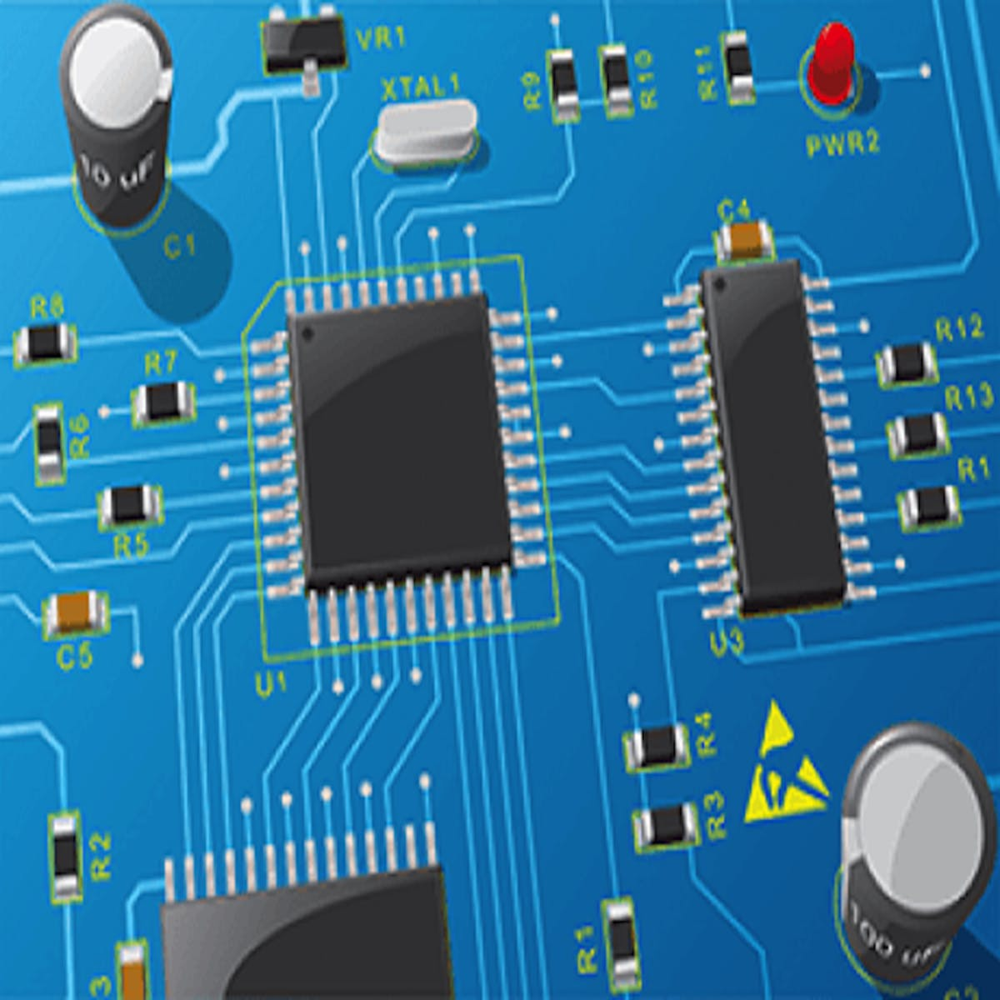
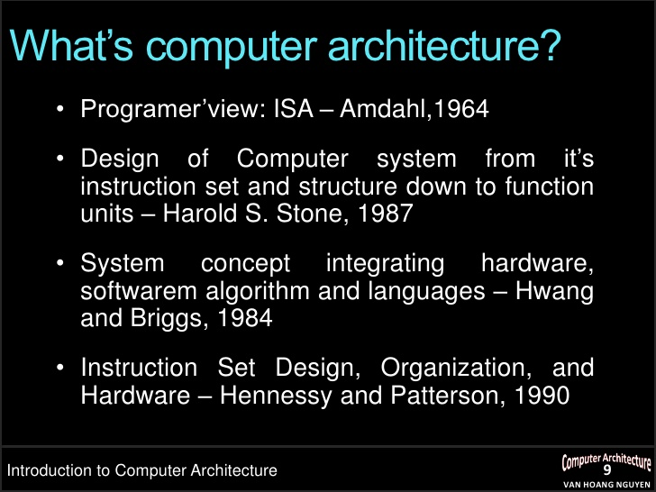

Computer Architecture Main Page
Links:
[This is the main page for Computer Architecture]
in computer engineering, computer architecture is a set of rules and methods that describe the functionality, organization, and implementation of computer systems.
Some definitions of architecture define it as describing the capabilities and programming model of a computer but not a particular implementation.[1] In other definitions computer architecture involves instruction set architecture design, microarchitecture design, logic design, and implementation.

